Interventions à Rochefort et alentours
Quelques réalisations
Nettoyage de toiture et de véranda, taille de haies ou entretien de jardin : voici quelques exemples concrets de mon travail.
Nettoyage de toiture
Les différentes étapes de mon intervention.
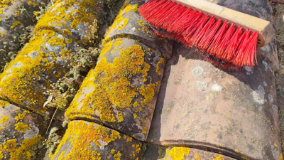
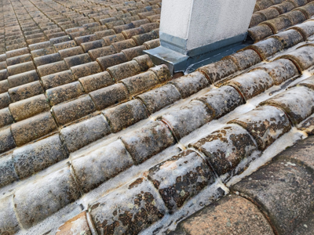
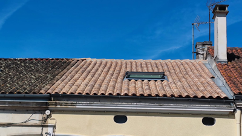
RésultatNettoyage de véranda
Retrouver une véranda propre et laisser entrer davantage de lumière.
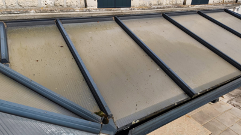
Avant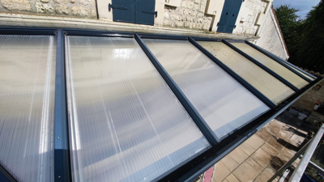
AprèsEntretien de jardin
Taille des végétaux et entretien courant des pelouses.
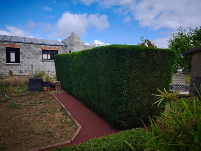
Taille terminée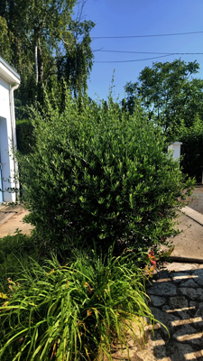
Avant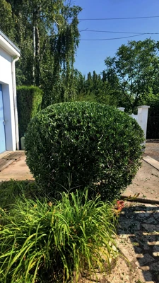
Après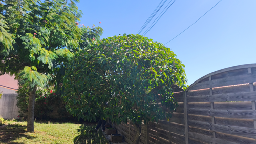
Taille terminée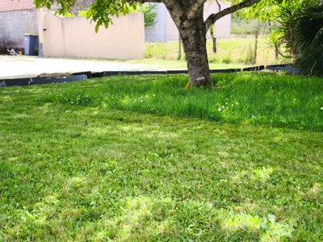
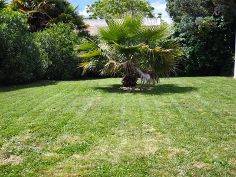
Après la tonteUn besoin similaire ?
Contactez-moi pour échanger sur votre projet. Les devis sont gratuits et sans engagement.